Choosing the Perfect Halloween Pokémon Team
Intro.
At the time when I was writting this page, I figured if I wanted to make a Halloween Pokemon team which ones to pick. Which Ones are the most spookiest and fit with the season?
So after looking through the official Pokedex, here´s my top picks for a Scary Team. I will however try to pick Pokemon besides just Ghost types as tempting as it is.
Cuz believe me otherwise this list would be nothing like Ghosts, which are the most spooky among the types. Anway, if anyone is reading this don´t be sad if you don´t find your faves here, I´m only doing this for fun.
Werewolves
To start off this monster mash list, let´s go with the classics, or in this case a werewolf!
Lycanroc, the Were Pokémon
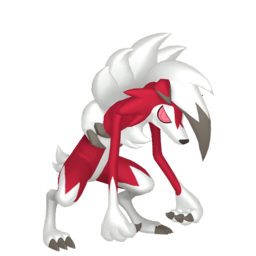
Now anthro canine monsters are nothing new to the pokeverse, but I decided that Lycanroc best fits with the theme.
For one its name is a play on the word Lycanthrope, and just look how feral it looks, with those glowing red eyes and sharp teeth grin.
One interesting to note is that this pokemon has two different forms which it can can evolve to according to the time of day, this one fittingly called Midnight From only occurs at night. While its day form just looks like a regular wolf.
Acording to the Lore, this stage is a lot more blood thirsty compared to its other form. it sure loves to fight!
Vampires and Bats
And what Classic horror team up wouldn´t be complete without vampires? Which are my favorite type of Monster by the way.
Gliscor, The Vampire Scorpion Pokémon
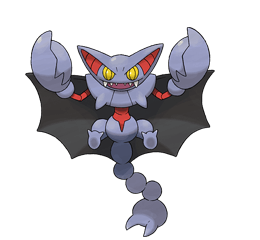
If had to pick, my Pokémon of choice is Gliscor, which is obvious if you look at it. With its massive bat wings fangs, bat ears.. its scorpion tail even resembles a pair of vampiric fangs, pretty cool if you ask me.
And then there´s this entry on Legends: Arceus describes it as such:
"It glides soundlessly on pitch-black wings and sinks sharp fangs into the throat of its prey. It takes on a look of satisfaction once it has entirely drained its prey of blood."
Lunala, The Moon Bat Pokémon
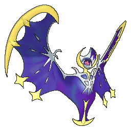
Next up is the Legendary Lunala, if you look up close enough it does looks like it has a see through skeleton while having a moon theme. While not a "vampire pokemon" per say, Bats have become an important halloween symbol.
But I do notice that its crescent shaped head kinda looks like the collar on a vampire´s cape, and it can take on a full moon form, And guess what we associate full moons with?
And if you really want to go for the more scary factor, its Shiny version is even better, which makes really resemble a vampire.
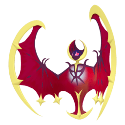
Not mention there are Bat Gods and Spirits that can be found in different mythologies, it is suspected that lunala maybe based on the Mayan god Camazotz, who serves the lords of the underworld and is often associated with Night death, and sacrifice.
But since this Pokémon first showed up in a setting inspired by Hawai, there is Pe'a-pe'a-makawalu the eigh eyed bat, and legend has it the Maui himself stole its eyes, hence Lunala´s Auxilary eye ability.
Zubat, the Blind Bat Pokémon
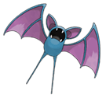
Another addition to the vampire entry is the Zubat evolution line, since some of the entries describe them as drinking blood, and can learn leech life. Althought I do like Zubat best for the lack of eyes.
Of course there is a little reference to actual vampire bats, since this species is known for having anticoagulant properties in their saliva as well a potential source of disease like rabies, hence why they are a Poison type.
Noibat, the Dragon Bat Pokémon
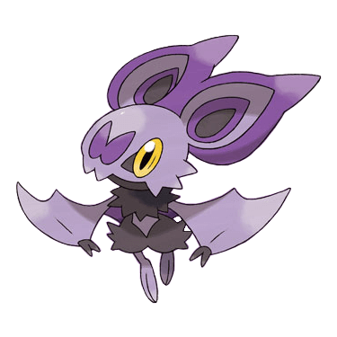
And Last on the list is Noibat, honestly I picked this guy for the dark and purple coloring, and golden eyes. Also its a bat pokemon that is a Dragon type, which interesting, since Dracula means son of the Dragon, so i wonder if its a reference to that, but it was probably inspired by the Wyvern.
Also it has all cutesy features thats make bats so darn adorable.
Witches
Can´t have Halloween without a bunch of witches, now can we? And luckily for us there´s at least three that fit that criteria.
Mukrow, the Familiar Witch
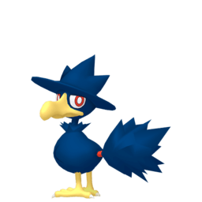
Mukrow is basically two spooky creatures in one!. Corvids already make for a fun gothic symbol, but to make it a witch? The fun part is that the tail looks like a broom, plus the pointy hat. And yes sometimes crows are know to be a witch´s familiar.
Of course the logic dictates its evolution into a Wizard. And this one might be more appropriate for a different themed team.
Mismagius, the Ghost Witch
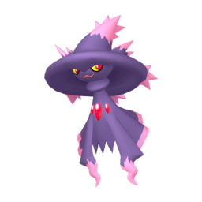
And I know I said I would try to to avoid makin this list mostly ghosts but Mismagius would fit right in. The design alone makes it obvious, with flowing robes and all, depending on the different Pokemon entries, it can cast spells to bring happiness or to bring misfortune. Can´t go wrong with this one.
Hatterene, The Fairy Tale Witch
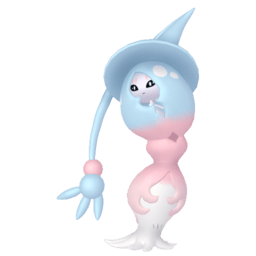
There´s also Hatterene, which is funny enough, a Psychic and Fairy type, and it does make sense if you´re familiar with European folkore. Supposedly the developers based it off your typical Forest witches, something from a fairytale.
Another thing interesting to note is its Gigamax from, if you look closely it she looks a damsel inside a tower, a reference to Rapunzel who was trapped into one by a witch.
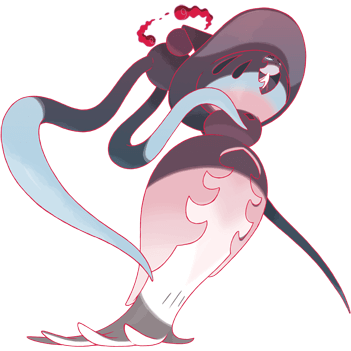
Demons and Goblins
So, we´ve got witches and vampires, werewolves. So what else is missing? The legions of hell of course! of course I had to pick a Houndoom for this one.
Houndoom, The Pokémon from Hell
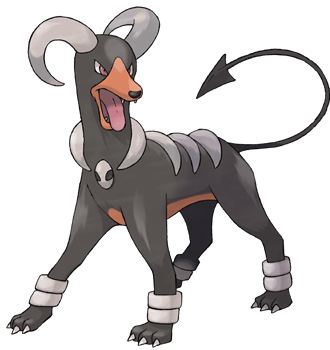
We´ve all heard stories about hellhounds and black dogs, and besides its horns and forked tail. its shiny megamax version makes it even more demonic.
{kind=link}
The Impidimp Family
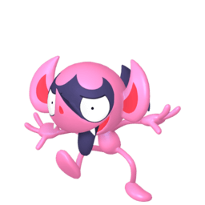
As for goblins, the entire Impidimp evolution line is what you want. With its dark/fairy type. At this point I feel the need to comment at every stage.
So impdimp. I got to give 5 starts. it resembles a very mishiveous little imp or a devil and it has a bat like mask on its face, also a reference to this very ugly statue.
Of course European folkore has its fair share of beings who like to pull pranks on humans.
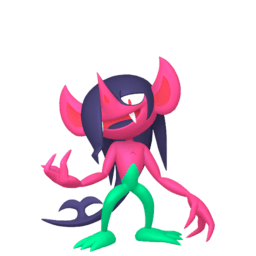
Next you have the Morgrem, which looks like a Impidimp entering its emo/goth phase. Now this fellow is a reference to another type of the fair folk. More specifically the irish leprechaun Cluricaune of Monaghan, who loves to stab people in their eyes, and it may be inspired by the redcap, who is just a malevolent species of goblin.
Also noticed how the far end of its hair look like a polearm? That is one of the redcaps favorite weapons.
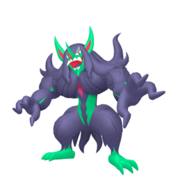
Last but not least we´ve got Grimmsnarl, who looks the goblin of the three. He´s a lot more bulkier, you do not wanna be in the same room as this guy.
This one has been inspired not just one but several folkore monsters, I´m talking about ogres, oni and even bogeyman. The fact its strength may come from its hair may also be a biblical story of Samson.
Its appearances also resembles that of the Grendel from Beowulf, and does have a scary appearance, specially its GigaMax form.
Mummies
Cofagrigus, The Cursed Tomb Pokémon

Its a cursed sarcophagus nuff said.
Well fine, it does have a very cool design, with a bunch of ghostly arms coming out of it. Its Mask, a leftover its previous evolution is supposed to repsresent its face when it was alive, a common feature among sarcophagus, heck even in later ages people would paint portraits of dead.
But besides its cursed tomb theme, its has one very, very special ability,Mummy Ability, allows it to passively turn other Pokemon into Mummies.
In Pokemon Lore its said that Grave robbers who come too close, end trapped in there and get well, mummified.
There is also one distrubing thing about it, they are proof that humans can turn into Ghost Pokemon after death, next to Phantump!
Just think of the implications of this, are humans just another Pokemon species in this Universe, is death simply a catalyst for the next stage in evolution?
We know some pokemon can evolve in different form if they meet certain conditions... Were all ghost Pokemon, humans at some Point?
Halloween Traditions
Pupmkaboo
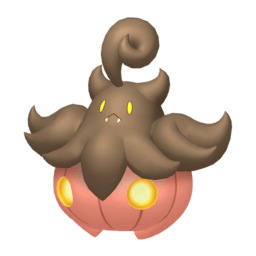
Honestly, I can´t have a halloween pokemon list without this cutie, Pumpkaboo which looks like a mixed between a black cat or bat and of course a pumpkin.
There´s even some spooky lore to go with it, it is often said that its job is to carry souls to the afterlife, its size depending on the number souls it carries, or the age of the soul. Some boos prefer to carry the soul of children, while others prefer adult souls and then to get to a bigger size.
Or maybe their soul preference depends on their size? Obviously I´m gonna asume kid´s souls are smaller.
And of course their next stage of evolution Gourgeist is even more Halloween-y. The bottom half looks like a proper Jack-o-lantern, while the top is a candle.
Mimikyu, the Ghost Sheet Pokémon
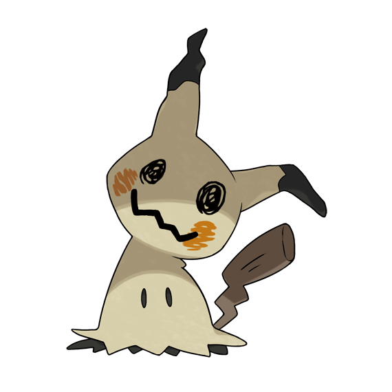
And since Halloween is all about wearing costumes, no Pokemon fits the spirit better than fan favorite Mimikyu, wearing an clumsly put together handmade Pikachu Costume, which actually makes it even more endearing.
All it wants is friends, so figuring out that since Pikachu is popular why not look like one. I also think its a very creative intrepretation of your stereotypical bedsheet ghost.
But there is something that this fella one tragic pokemon there´s a theory that its true form is too horrifying for mortal eyes, those who look at it end up dying or getting sick. So the best it can do is to protect their potential friends from even gazing upon it. The sheet also serves as protection for it is weak to sunlight.
Poor fella, well for what is worth I find them to be a much better mascot. the original Pikachu is overrated anyway.
Haunted Mansion
I decided to leave the best for last, they are among one of my favorite types after all. So finally end this article were´gonna focus more on something more haunting.
The Litwick Evolution Line
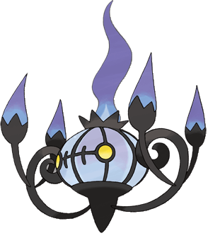
So, as you enter the spooky mansion one thing you notice is all the candles in the room suddently lit up without anyone doing it? And why is that chandelier moving!?
Actually that´s no candle and that is certainly not a chandelier but a bunch of pokemon.
I don´t thinks there is much to say about their design except to say they look cool specially with the purple flames, and Chandelure is the fanciest of the three stages.
It was inspired by two different folkore you got the will-o-wisp, and of course the ghost yokai Chōchin'obake, which is well a living lantern.
It also said these pokemon use people´s dead spirits as fuelllllllllll.
The Sinistea Evolution Line
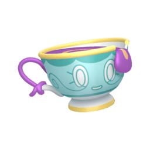
As you sit in the kitchen someone seem to left a nice cup of tea and a pot, wait itts haunted? No, its Siniestea! well what happend according to old wive´s tale is that a lonely spirit decided to possess and abadoned cold tea cup. Also, I would advise visitors not drinking it or it will cost your life energy, also it tastes bad, yuck!
Design wise you can´t go wrong with a cracked cup with a face on it, but one small little detail I love is that its holding their own cup handle with a single lifted lifted pink, considerading that is the polite way to drink tea at least accourding to the British. And considering the real world country where Pokemon Sword and Shield is based, of course they would have a tea based Pokemon!
A poltergeist in a tea pot is also a fun concept as well.
The Greavard Evolution Line
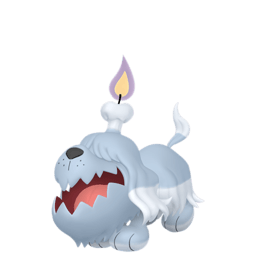
You have enough of this nonsense, so you decided to head outside, and you seem to stumble upon a graveyard. You hear a bark and brace yourself for the worst, But what´s this? It seems friendly a wants to play like most dog pokemon do. You might just have met a Greavard, also be carefull not to play for too long or it might absorve your life force!
Which kinda sad for this fella, see this Pokemon is just lonely and will follow anyone who gives it attention, no different than a regular dog.
And yes isn´t he just preciousss, with their widdle candle and fur? By the way you will be happy to know there is an actual dog breed that inspired this design, well several , like Komondor the mop dog and the Briard. But considering the region that inspired the game I´m tempted to think it may be inspired by the Catalan Sheepdog.
And speaking of Iberian dogs, there at least some folkore related to spooky dogs, once of which is kind of a vampire? Which is explains the life-force draining aspect.
Houndstone The Gravestone Pokémon
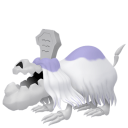
Sadly, this cuteness not last for long, as their next stage Houndstone, is a lot more skeletal looking, almost as if its flesh has rotted over time living not but bones and bit of fur, prehaps of a result of spending too much time underground, with only a gravestone to signify its presence.
However, dont let its appearance scare you, it is actually a very loyal Pokemon, it is said that in life it was very well loved and mourned Pokemon.
Even one of its abilities reflects that, since it can learn the Last Respects move.
Fun fact, there´s at least one piece of Central America Folkore tells of the existence of the Cadejo, a dog spirit. White Cadejo will often protect travelers, but its the black one you gotta look out for.
The Duskull Evolution Line
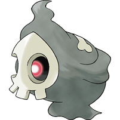
Also, be on the look out for Duskull who like the personifaction of the grim reaper, like a typical bogeyman, it is known to go after very disobedient children.
I also think having a single eye that wanders between the two sockets.
Of course its next two stages Duskclops and Dusknoir stray away from the more western design and veer more into Yokai territory. But I wanna point Dusclops resembles a mummy and Dusknoir seems to have a face on its belly that looks like a Jack-o-Lantern.
Conclusion
And this is all the best Pokémon I think for fit best for a Halloween team. Hope this inspires people to make their own spooky teams.
Aside from looking at all the cool horror designs, there is a ton of lore I found. And wow some of this lore is kinda dark for a light hearted game, I dunno how much you can consider it canon. Either this is basically the Pokemon equivalent of an old wive´s tale, or Pokemon trainer are braver then we tought. Kids are going around caring for Ghost Baloons that can whisk them away! Our world would never...
I feel like the whole Pokemon Universe is just basically Australia.
I do love it though, it gives the Pokémon Universe a bit of spice.

GO BACK
©Pokemon and its respective characters belong to GameFreak and Nintendo.